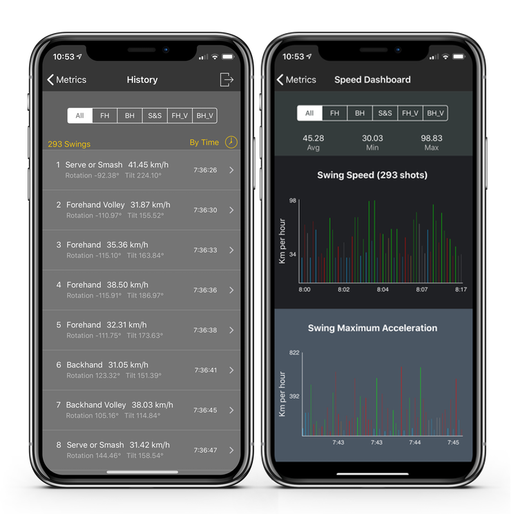

If you are not seeing your swing statistics such as swing speed, please try completing the troubleshooting steps below in the order presented.
Step 1
Make sure you have a valid Swing Analyzer Monthly or Annual Subscription.
- Open TennisKeeper app on your iPhone and go to your Profile.
- Make sure Swing Analyzer Subscription Type is set to either Annual or Monthly, and it has not expired.
- If the date has expired, please renew your Subscription.
- If the date is not correct, please go to Get Swing Analyzer > Restore Purchases to reset it.

Step 2
Check your Account status on your Apple Watch.
- Go to TennisKeeper app Start screen. At the bottom of the screen, your account status should say either Swing (Monthly) or Swing (Annual).
- If it is not set correctly, please make sure you have a valid subscription.
- If you have a valid subscription, go to your Profile and tap the Send Account status to Apple Watch button.
Note: This label must show Swing (Monthly) or Swing (Annual) before each swing shot detail will be saved to iCloud for analysis. In other words, any sessions that you saved before you subscribe will not have any swing details.
Step 3
- Make sure your iPhone is connected to your Apple Watch. You can validate if the phone is connected to your Apple Watch by testing the connection on the Apple Watch from the Control Centre and hearing a clear ping sound. See the Apple Support link for more instructions.
- In particular, you should never see the Disconnect icon. If you see this icon, it means your Apple Watch cannot reach your iPhone and it does not matter how close they are. Please follow the instructions above to check Airplane Mode, Wifi and Bluetooth.
Step 4
Check your internet connection. Ensure your iPhone is connected to a reliable data connection (Wifi or cellular). This is because each swing detail will be stored to iCloud during your play so there must be a reliable data connection.
- If you have trouble connecting to Wifi, try to connect using Cellular only.
- If you have trouble connecting to Cellular, try to connect using Wifi only.
- Make sure the two do not interfere each other. In some clubs, the Wifi can be spotty. By having Wifi on, the cellular connection cannot be accessed.
Step 5
Check your iCloud Connection.
- Make sure you are enabled to iCloud and iCloud access is allowed if you use cellular data.
- You can validate you have good iCloud connection if you can see other TennisKeeper users activities.
- Go to TennisKeeper > Discover > Community. If you see other users out there playing today, it indicates that Apple iCloud is working and you can connect to it.
Step 6
Start your session. When you finished, save your session. After you saved your session, open the app on your iPhone. Go to the Metrics view. You should be able to see your swing details and swing speed.
Restart, Reinstall, Repair
If you have validated the above steps and it is still not working, try these steps:
- Restart your Apple Watch and iPhone.
- Delete and reinstall TennisKeeper app.
- Pair your iPhone and your Apple Watch again.
The most likely problem is connectivity issues between your Apple Watch and your iPhone and iCloud. They must be able to connect at all times for each swing shot to save to iCloud directly from your Apple Watch.